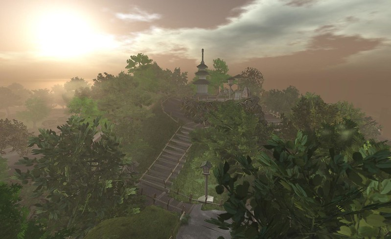

My character is from an imaginary place name B-land but he was born in the real world. "B-land" is a magic place where you can see some humans being (but with different skills) , you can see some pets and some others cool creatures. It's a place where everything is beautiful and mostly colorful.
""a really beautiful place" by ▓▒░ TORLEY ░▒▓ is licensed under CC BY-SA 2.0"